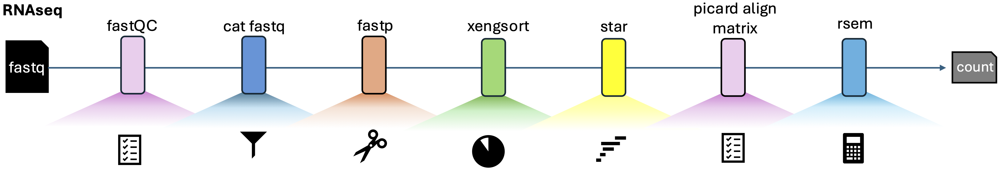

RNAseq Snakemake Workflow#
Version: 202509 [GitHub Repo]

This workflow provides an end-to-end RNAseq analysis pipeline for PDX, PDO, and Patient Tissue samples, customized for the HPC4Health Slurm cluster.
It integrates widely used bioinformatics tools with cluster-optimized execution.
🔍 Workflow Overview#
The pipeline consists of the following steps:
- Quality Control & Trimming –
fastp - Host/DNA Filtering (optional) –
xengsort(run only for PDX samples) - Alignment –
STAR - Alignment Metrics –
Picard CollectAlignmentSummaryMetrics - Quantification –
RSEM
Inputs:
- FASTQ files (single-end or paired-end)
- Human/mouse reference genome, annotations, and indexes (provided separately)
Outputs:
- QC reports (results/fastp/, results/picard/)
- Aligned BAM files (results/star/)
- Gene- and transcript-level expression estimates (results/rsem/)
🛠️ Software Stack#
| Tool | Purpose | Version (recommended) |
|---|---|---|
| fastp | FASTQ QC and adapter trimming | 0.23.1 |
| xengsort | Host/DNA filtering (for PDX samples) | 2.0.9 |
| STAR | RNAseq read alignment | 2.7.3a |
| RSEM | Gene/transcript quantification | 1.3.0 |
| Picard | Alignment metrics & RNAseq QC | 2.10.9 |
| Snakemake | Workflow engine | 6.15.3 (tested) |
⚙️ Setup Instructions#
1. Home Directory Setup#
1.1 Create Snakemake Environment#
Start a build node session:
Install Snakemake v6.15.3:conda install -n base -c conda-forge mamba
mamba create -c conda-forge -c bioconda -n snakemake6153 snakemake=6.15.3
1.2 Clone Workflow Repository#
Clone the workflow into home directory first.1.3 Generate Xengsort Singularity Images (Required for PDX, Optional for PDO, PatientTissue)#
cd RNAseq_PDX_PDO_PatientTissue_Snakemake_v202509/env
module load apptainer/1.0.2
apptainer build xengsort209.sif docker://quay.io/biocontainers/xengsort:2.0.9--pyhdfd78af_0
2. Project Directory Setup#
2.1 Start an interactive session#
Move the workflow to your working directory.2.2 Configure config/samples.tsv#
| sample_name | sample_type | single_pair_end | fq1 | fq2 |
|---|---|---|---|---|
| SAMPLE001 | PDX | pe | /path/to/data/SAMPLE001_R1.fq | /path/to/data/SAMPLE001_R2.fq |
| SAMPLE002 | PDO | pe | /path/to/data/SAMPLE002_R1.fq | /path/to/data/SAMPLE002_R2.fq |
| SAMPLE003 | PatientTissue | pe | /path/to/data/SAMPLE003_R1.fq | /path/to/data/SAMPLE003_R2.fq |
sample_typedetermines whetherxengsortis run (PDX = yes,PDO/PatientTissue = skipped).single_pair_endshould beseforsingle-enddata,peforpaired-end.
2.3 Configure workflow/Snakefile#
Update the workdir parameter to point to your working directory.
2.4 Reference Data (ref/)#
The ref/ directory contains genome FASTA, annotations (GTF), and prebuilt STAR/RSEM indexes.
Please contact the workflow maintainer to obtain and transfer the reference data to HPC.
2.5 Final Project Structure#
After everything is setup, your working directory should have the following structure:
.
├── LICENSE
├── README.md
├── config
│ ├── config.yaml
│ └── samples.tsv
├── env
│ ├── README.md
│ └── xengsort209.sif
├── images
│ └── RNAseq_workflow-diagram.png
├── ref
│ └── genomes
│ ├── human
│ │ └── GRCh38
│ │ ├── GTF
│ │ │ └── genome.gtf
│ │ ├── STAR
│ │ │ └── STAR_GRCh38_150
│ │ │ ├── Genome
│ │ │ └── SA
│ │ ├── downloadGenome.sh
│ │ ├── genome.fa
│ │ ├── genome.fa.amb
│ │ ├── genome.fa.ann
│ │ ├── genome.fa.bwt
│ │ ├── genome.fa.pac
│ │ └── genome.fa.sa
│ ├── mouse
│ │ └── grcm38
│ │ ├── genome.HouseKeepingGenes.bed
│ │ ├── genome.chrom.sizes
│ │ ├── genome.dict
│ │ ├── genome.fasta
│ │ └── genome.fasta.fai
│ └── xengsortidx_grcm38_grch38
│ ├── xengsortidx.hash
│ └── xengsortidx.info
├── slurm
│ ├── CookieCutter.py
│ ├── __pycache__
│ │ ├── CookieCutter.cpython-310.pyc
│ │ └── slurm_utils.cpython-310.pyc
│ ├── cluster.json
│ ├── config.yaml
│ ├── settings.json
│ ├── slurm-jobscript.sh
│ ├── slurm-status.py
│ ├── slurm-submit.py
│ └── slurm_utils.py
└── workflow
├── Snakefile
├── rules
│ ├── align.smk
│ ├── common.smk
│ ├── countmatrix.smk
│ └── ref.smk
└── scripts
├── common
│ └── __init__.py
├── count-matrix.py
├── prepare-rsem-reference.py
└── rsem-generate-data-matrix-modified.pl
20 directories, 43 files
▶️ Running the Workflow#
1. Activate conda environment#
2. Dry-run (test only, no jobs executed)#
3. Run locally with a few cores#
4. Submit to SLURM#
📂 Output Structure#
- results/fastp/ – QC reports in HTML/JSON
- results/star/ – Aligned BAM files + STAR logs
- results/picard/ – Alignment metrics (Picard CollectAlignmentSummaryMetrics)
- results/rsem/ – Gene and transcript quantifications
📌 Notes#
This workflow is optimized for HPC4Health Slurm. Adapt scheduler settings (scheduler.sh) for other clusters.
👤 Contact#
For questions or support, please contact: [Guanqiao Feng] – [guanqiao.feng@uhn.ca]